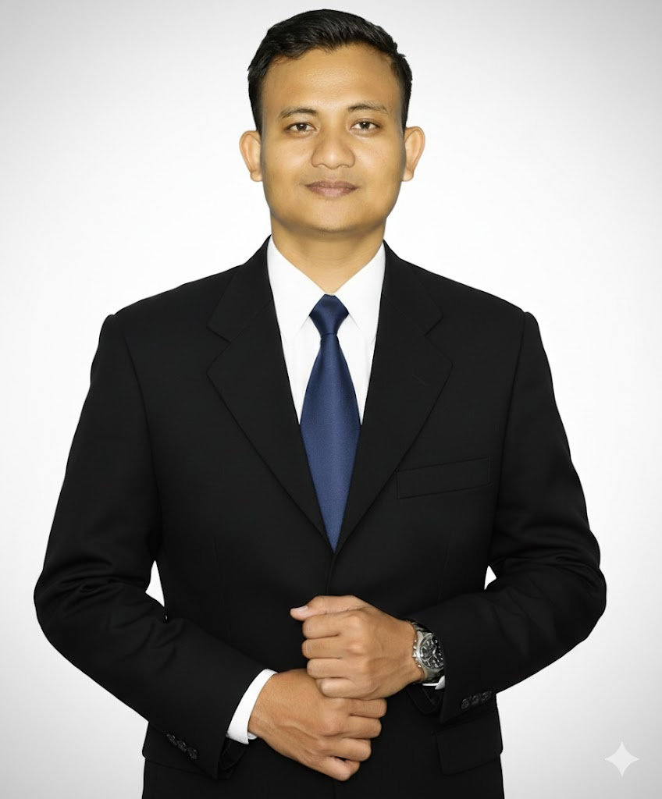
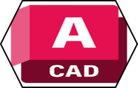
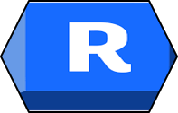
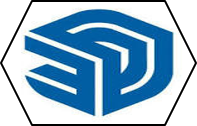
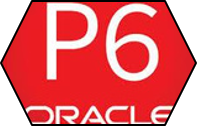
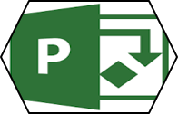

Foundation & Piling • Structural Execution • QA/QC • Planning & Coordination
Civil & structural site engineer with 9+ years of hands-on experience across industrial, heavy-foundation, warehouse and high-end residential projects in Myanmar and Thailand.

Experienced in civil, structural, piling, reinforced-concrete and finishing works from early construction through handover.
Strong in subcontractor coordination, work sequencing, inspection, technical documentation and progress control.
Collaborative, safety-focused and comfortable working across clients, consultants, contractors and site teams.
Bored piles, pile testing, foundations, excavation and temporary support works.
RC works, reinforcement, formwork, concrete and structural site execution.
Daily work fronts, subcontractors, plant, access, sequencing and interfaces.
Inspections, pre-pour checks, snagging, rectification and handover support.
Construction planning, schedules, progress monitoring and recovery coordination.
AutoCAD, Revit, Twinmotion, Primavera P6, MS Project and technical documentation.
Site Engineer / Project Coordinator
View project evidence →Project Engineer
View project evidence →Project Engineer
View project evidence →Project Engineer · Main-Contractor-Side Planning & Coordination
View project evidence →Bored Pile Testing Engineer · Thanlyin Star City Condominium
View project evidence →Assistant Project Engineer
View project evidence →Civil Engineer
View project evidence →Civil Site Engineer
View project evidence →Christiani & Nielsen DCM Thai Public Co., Ltd · Phuket, Thailand
Project: Banyan Tree Residences Phuket
STECON Engineering & Construction · Myanmar
Projects: Heineken Brewery Myanmar · Sagaing Fuel Ethanol Factory · Industrial / Heavy Foundation Works
GEOLAB Myanmar (Malaysia Base) · Yangon, Myanmar
Projects: Myanmar Pou-Chen (Thar-Du-Kan Industrial Zone) · Thanlyin Star City Condominium · Puma Petroleum Terminal (Thilawa SEZ)

AutoCAD
Revit View work →
SketchUp View work →
Primavera P6Open files
Microsoft ProjectOpen filesStarfish — Levels 3A, 3B, 4A & 4B.
AutoCAD, Revit Essential, Advanced and Specialized Structure.
MS Project, Primavera P6, Integrated Planning & Control, BBS, Microsoft Office and Project Management Foundations.